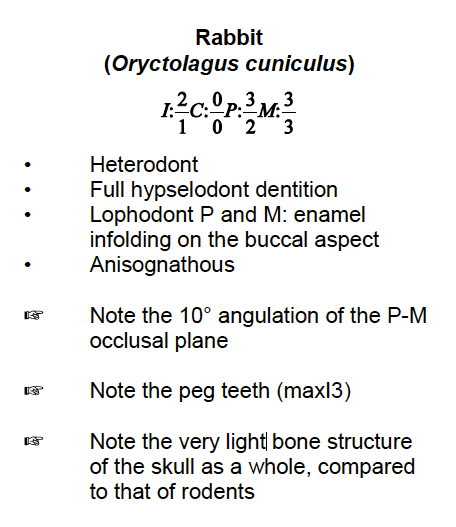
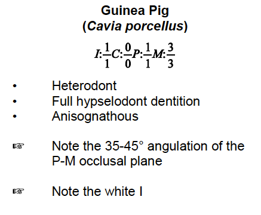
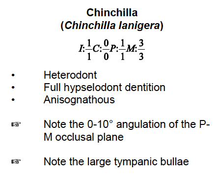
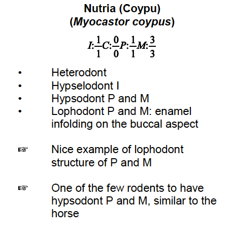
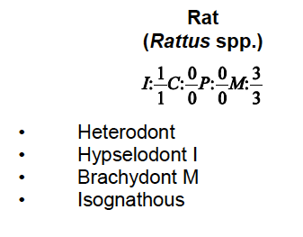
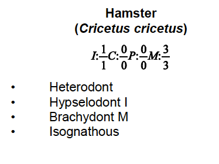
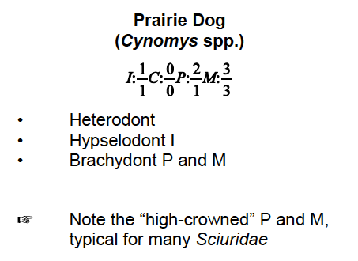
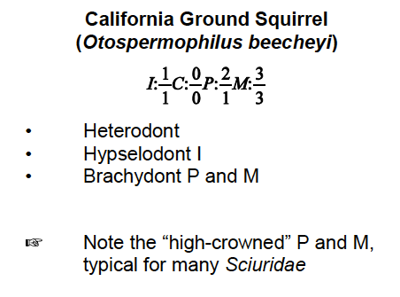
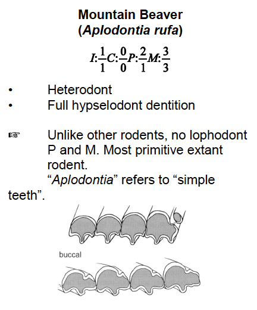
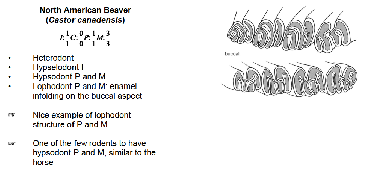

The following notecards summarize the dental formulas and key dental features of common rabbit and rodent species encountered in clinical practice and comparative anatomy.
Lagomorphs
Rabbit

Rabbit — dental formula and key dental features.
Rodents — Hystricomorpha
Guinea Pig

Guinea Pig — dental formula and key dental features.
Chinchilla

Chinchilla — dental formula and key dental features.
Nutria (Coypu)

Nutria (Coypu) — dental formula and key dental features.
Rodents — Myomorpha
Rat

Rat — dental formula and key dental features.
Hamster

Hamster — dental formula and key dental features.
Muskrat
Muskrat — dental formula and key dental features.
Rodents — Sciuromorpha
Prairie Dog

Prairie Dog — dental formula and key dental features.
California Ground Squirrel

California Ground Squirrel — dental formula and key dental features.
Mountain Beaver

Mountain Beaver — dental formula and key dental features.
Rodents — Castorimorpha
North American Beaver

North American Beaver — dental formula and key dental features.